Life long learning
The philosophy of a Software Craftsman

Who am I?
Jørn Ølmheim, GBS IT Drilling Well and Real time Services
- Close to 20 years experience
- Software craftsman
- Polyglot programmer
- Leading Advisor, Corporate IT
What is a Cultured Developer?
Knowledge
Books
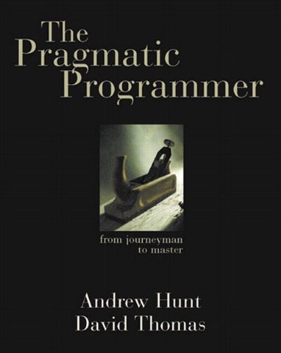 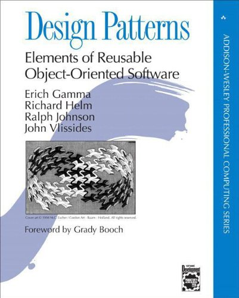
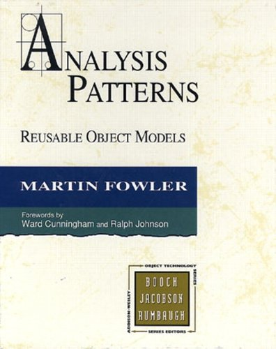
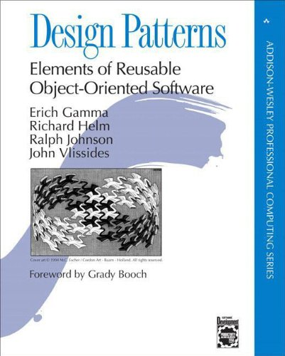
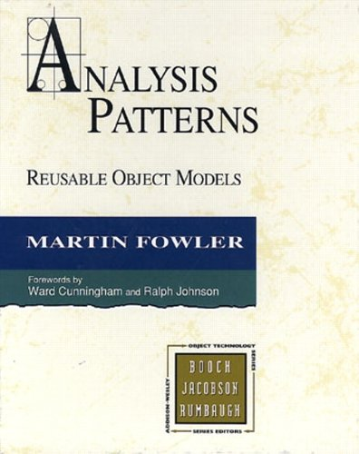

Knowledge
Methodologies
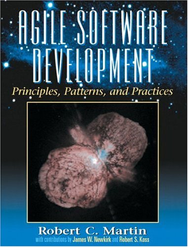 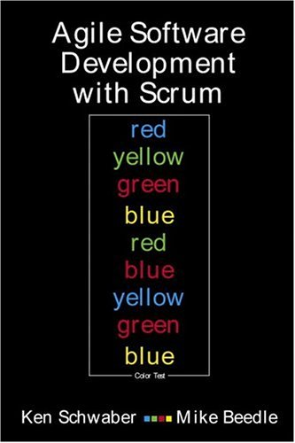
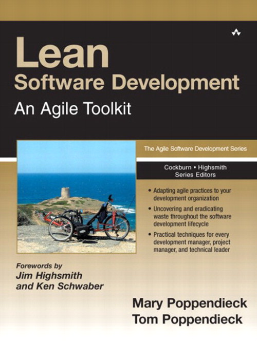
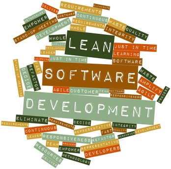
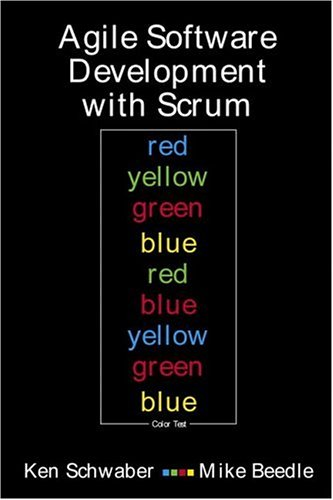
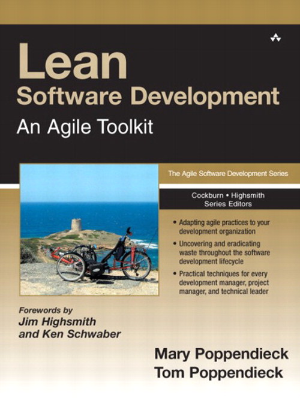
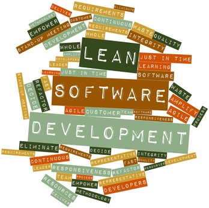
Knowledge
Programming Languages
 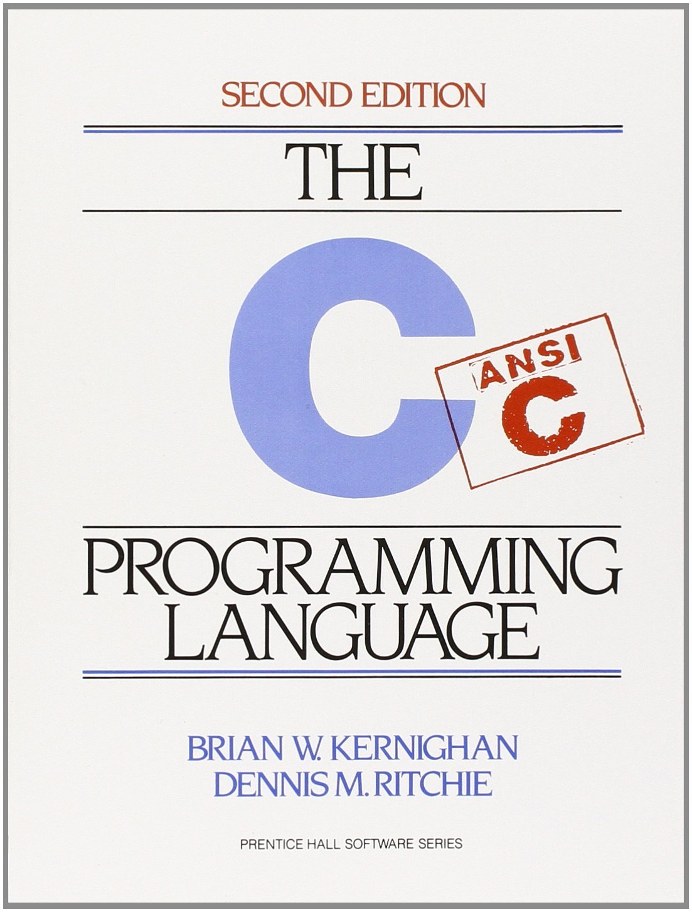
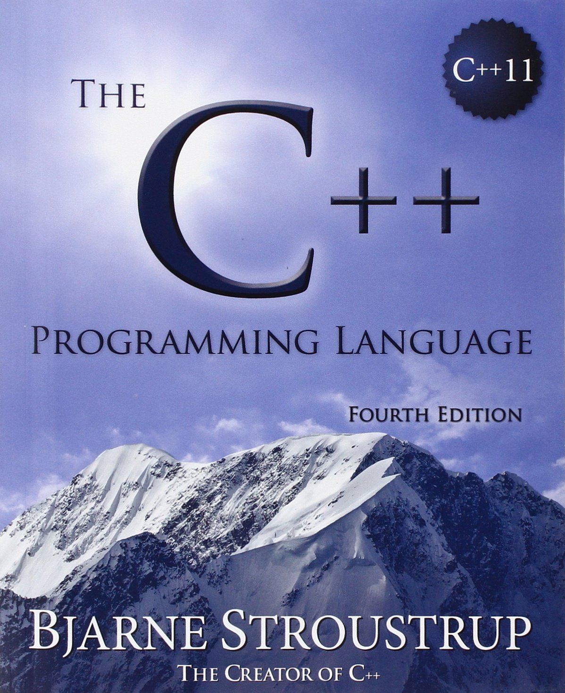
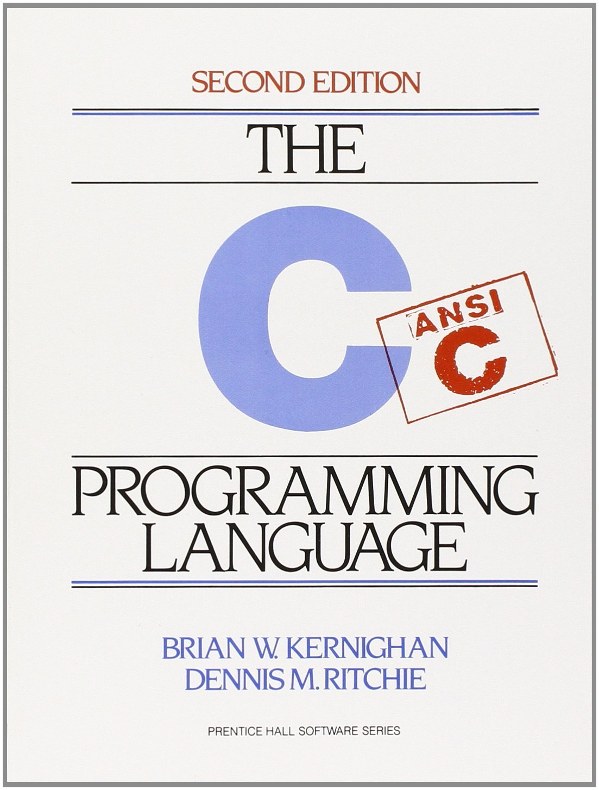
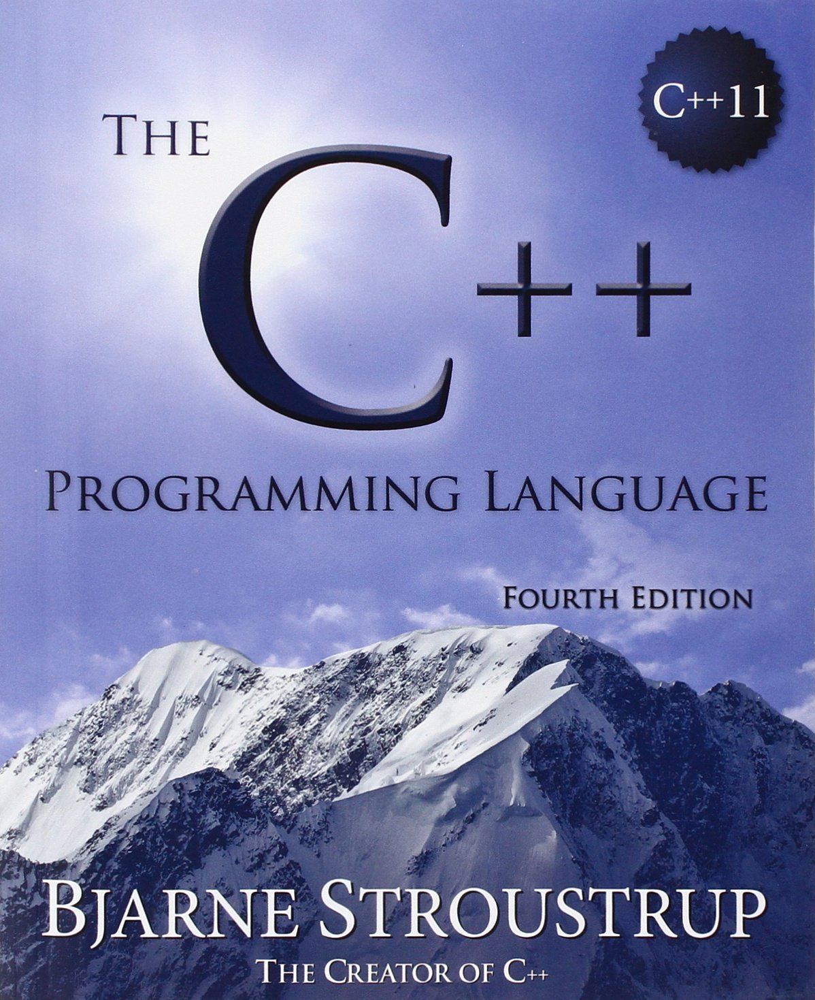


Knowledge
Frameworks


Attitude
- Pragmatic
- Open
- Dedicated
- Deliberate
- Curious